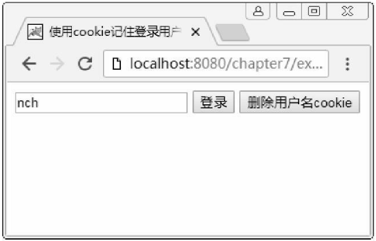
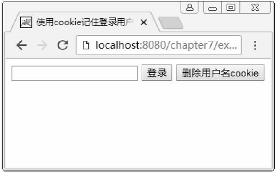
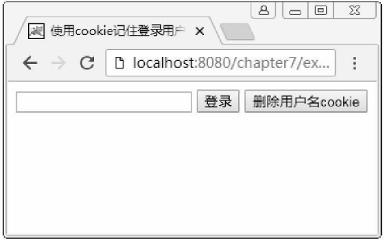

首页 > 编程笔记
JS cookie的获取、设置、修改和删除
cookie 是存储于访问者的计算机中的变量，当用户访问了某个网站时，就可以通过 cookie 向访问者计算机上存储数据。之后，当用户在同一台计算机通过浏览器再次请求该页面时，会发送这个 cookie，因而可以使用 cookie 来识别用户。
一次可以将多个名/值对赋给 document.cookie，并使用分号加空格隔开每个名/值对。
设置 cookie 的基本格式如下：
使用上述格式设置的 cookie 中的值在用户计算机中存储时，是以网站域名形式来区分不同网站的数据，而且不同浏览器存放 cookie 的位置不一样，因此不同浏览器之间存储的 cookie 不可以相互访问。
另外，同一个域名下存放的 cookie 的个数是有限制的，不同的浏览器对存放的个数限制不一样。而且，每个 cookie 存放的内容大小也是有限制的，不同的浏览器该大小限制也不一样。
要获取不同的 cookie 值，可以将这个包含了分号及空格的字符串使用 split() 方法按分号分隔转换为一个字符串数组，然后再对这个字符串数组进行遍历即可得到每个名/值对，对这个名/值对再次使用 split() 方法按等号分隔转换为一个包含名称和值的数组，就可以得到指定 cookie 名称的值了。
例如要获取 cookie 名为 age 的值的代码如下：
综合示例：使用 document 操作 cookie。
如果单击删除用户名 cookie 按钮后关掉 Chrome 浏览器进程，然后再次打开 Chrome 访问本例，则得到图4所示的结果，此时存储在 cookie 中的用户名已删掉，因而无法显示在文本框中。
JS设置cookie
使用 cookie 来存储数据是通过设置 cookie 来实现的。每个 cookie 都是一个“名/值”对，名/值对用等号连接，并将该名/值对赋值给 document.cookie 即可。一次可以将多个名/值对赋给 document.cookie，并使用分号加空格隔开每个名/值对。
设置 cookie 的基本格式如下：
document.cookie = "名称1=值1[; 名称2=值2; …]";设置 cookie 的示例如下：
document.cookie = "username=abc"; document.cookie = "age=23"; document.cookie = "username=abc; age=23";需要注意的是，在 cookie 的名称或值中不能使用分号
;和等号=等符号。如果想存入这些符号，需要使用 escape() 函数进行编码。例如：
document.cookie="str="+escape("username=nch")
该代码等效于：
document.cookie="str=username%3Dnch"即等号被编码为“%3D”。当使用 escape() 编码后，在取出值以后需要使用 unescape() 进行解码才能得到原来的 cookie 值。
使用上述格式设置的 cookie 中的值在用户计算机中存储时，是以网站域名形式来区分不同网站的数据，而且不同浏览器存放 cookie 的位置不一样，因此不同浏览器之间存储的 cookie 不可以相互访问。
另外，同一个域名下存放的 cookie 的个数是有限制的，不同的浏览器对存放的个数限制不一样。而且，每个 cookie 存放的内容大小也是有限制的，不同的浏览器该大小限制也不一样。
JS修改cookie值
如果要改变一个 cookie 值，只需对它重新赋值，例如：document.cookie="age=36";这样就可以修改前面设置的 age=23 的 cookie 值。
JS获取cookie
通过 document.cookie 来获取当前网站下的 cookie 时，得到的是字符串形式的值，该值包含了当前网站下所有的 cookie，它会把所有的 cookie 通过一个分号加空格的形式串联起来。要获取不同的 cookie 值，可以将这个包含了分号及空格的字符串使用 split() 方法按分号分隔转换为一个字符串数组，然后再对这个字符串数组进行遍历即可得到每个名/值对，对这个名/值对再次使用 split() 方法按等号分隔转换为一个包含名称和值的数组，就可以得到指定 cookie 名称的值了。
例如要获取 cookie 名为 age 的值的代码如下：
document.cookie = "username=abc; age=23";
var arr1 = document.cookie.split(';');
for(var i = 0; i < arr1.length; i++){
var arr2 = arr1[i].split('=');
if(arr2[0] == 'age'){
alert(arr2[1]);
}
}
JS设置cookie的有效时间
默认情况下，cookie 是临时存储的，即默认是存在内存的，并没有存储到硬盘中，所以存储的 cookie 在浏览器进程关闭后会自动销毁。如果想把 cookie 在计算机中保存一段时间或永久保存，则需要在设置 cookie 时对其设置一个有效时间，设置格式如下：document.cookie = "名称=值;expires="+字符串格式的时间;例如：
var oDate = new Date(); oDate.setDate(oDate.getDate()+10);//访问页面后的10天过期 //设置cookie的有效时间, 时间为字符串格式 document.cookie = 'username=abc;expires='+oDate.toGMTString();
JS删除cookie
直接将 cookie 的有效时间设置成过去某个时间即可。例如：var oDate = new Date(); oDate.setDate(oDate.getDate()-1);//访问页面的前一天 document.cookie = 'username=abc;expires='+oDate.toGMTString();
综合示例：使用 document 操作 cookie。
<!doctype html>
<html>
<head>
<meta charset="utf-8">
<title>使用cookie记住登录用户名</title>
<script>
window.onload = function(){
var oUsername = document.getElementById('username');
var oLogin = document.getElementById('login');
var oDel = document.getElementById('del');
//判断用户是否曾经登录过
if(getCookie('username')){
oUsername.value = getCookie('username');
}
//定义一个函数来获取指定名称的cookie值：
function getCookie(key){
var arr1 = document.cookie.split(';');
for(var i = 0; i < arr1.length; i++){
var arr2 = arr1[i].split('=');
if(arr2[0] == key){
return unescape(arr2[1]);//对编码后的内容进行解码
}
}
}
//定义一个函数来设置cookie,同时设置cookie的有效时间
function setCookie(key,value,t){
var oDate = new Date();
oDate.setDate(oDate.getDate()+t);
//使用escape()对内容进行编码
document.cookie = key+'='+escape(value)+';expires='+oDate.toGMTString();
}
//定义一个函数移除cookie
function removeCookie(key){
setCookie(key,'',-1);
}
oLogin.onclick = function(){
alert('登录成功');
//将输入的用户名存储在cookie中, 且在登录5天后cookie过期
setCookie('username',oUsername.value,5);
}
oDel.onclick = function(){
removeCookie('username');
oUsername.value = '';//移除cookie后清空文本框内容
}
};
</script>
</head>
<body>
<input type="text" id="username"/>
<input type="button" value="登录" id="login"/>
<input type="button" value="删除用户名cookie" id="del"/>
</body>
</html>
注意：Firefox 和 IE 在本地只允许临时操作 cookie，关闭浏览器后无法获取 cookie。而 Chrome 则不允许在本地操作 cookie。将本例发布到 Web 服务器上后再访问它时，这些浏览器都可以操作 cookie。
图3和图4所示是在 Chrome 浏览器中访问发布到 Tomcat Web 服务器上运行后分别为输入用户名后单击登录按钮和删除按钮的结果。Tomcat 服务器在本机，因而可以使用 localhost 作为域名来访问它。
输入用户名后单击登录按钮，在单击删除用户名 cookie 按钮前关掉 Chrome 浏览器进程，然后再次打开 Chrome 访问本例，可得到图3所示的结果，即用户名会自动显示在文本框中。如果单击删除用户名 cookie 按钮后关掉 Chrome 浏览器进程，然后再次打开 Chrome 访问本例，则得到图4所示的结果，此时存储在 cookie 中的用户名已删掉，因而无法显示在文本框中。

图3：输入用户名后单击登录

图4：单击删除用户名 cookie 按钮后的效果
图3：输入用户名后单击登录

图4：单击删除用户名 cookie 按钮后的效果
关注公众号「站长严长生」，在手机上阅读所有教程，随时随地都能学习。内含一款搜索神器，免费下载全网书籍和视频。

微信扫码关注公众号